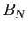
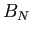

Para analizar el comportamiento del método se proponen pruebas diferentes:
- Experimento 1: evaluación del costo computacional y detección de puntos claves bajo las condiciones de iluminación
 ,  y
,  y  .
.
- Experimento 2: evaluación detallada del costo computacional en etapa de ejecución, considerando los pasos del algoritmo propuesto.
Subsecciones
christian
2014-01-31